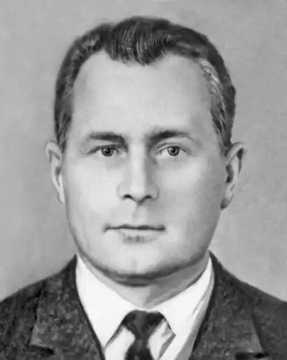

Народився Дмитро Мусійович у с. Мала Загорівка Борзнянського району Чернігівської губернії у 1922 р.
З 1932 по 1939 р. навчався в плисецькій середній школі, за тим вступив на філологічний факультет Ніжинського педінституту. З другого курсу був мобілізований до армії. Служив авіатором — стрільцем на літаку; кінець війни зустрів у Варшаві. 1946 року Куровський повернувся до інституту, а по його закінченню продовжив навчання в аспірантурі при Київському Державному Університеті.
Вперше Дмитро Мусійович Куровський зацікавився поезією у 1936 році. Вже через рік були опубліковані перші вірші, які одразу привернули увагу у відповідних органах за недостатню лояльність до радянського режиму. Писав вірші Дмитро Куровський і під час війни. Про "незаурядные качества растущего литератора" зазначено в його службовій характеристиці. У 1950-60-і роки працював кореспондентом, інспектором облвно. Проте головною справою для нього було вчителювання (викладав українську мову та літературу) у Чернігівському та Миколаївському педінститутах, середніх школах Устилуга та Чернігова. Був одним із засновників Чернігівського осередку Національної спілки письменників України (членом спілки став 1971 року). У 1970-80-х роках став жертвою радянської каральної психіатрії. Помер Дмитро Мусійович на 66-му році життя. Похований у рідному селі. Видання творів: Поетична збірка "У домі ріднім" 1959 р. Поетична збірка "Андрійко і чечітка" Поетична збірка "Миропілля" 1966 р. Поетична збірка "Польова сторожа" Поетична збірка "Хвала долі" 1982 р. Також за життя Дмитра Куровського вийшли 12 книг дитячих віршів його авторства. Посмертно: Поетична збірка "Приду таким, як є…" 1996 р. Роман "Недосвіт" 2003 р. вид. Чернігівські обереги Поетична збірка "Далекі музики" 2012 р. Видання до 90-річчя від дня народження поета.